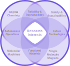

News
Recent HighlightsAbout Me
An IntroductionI am an innovative problem solver working at the forefront of technology to deliver cutting-edge research. My passions encompass the utilisation of machinery to automate chemistry. As a Research Fellow at the University of Glasgow and a Team Leader in the Cronin Group, I directly manage and contribute towards the development of Digital Chemistry and automation.
I obtained a Master’s degree in Chemistry from The University of Manchester, graduating with first-class honours in 2017. My Master’s thesis focused on transition metal-free C‒H functionalisation. During my studies, I completed a research internship at Bayer AG, investigating high-throughput photochemical methodologies for drug discovery.
I undertook a PhD at The University of Manchester under the supervision of Professor David Leigh. My doctoral research, completed in 2021, explored fuelled, artificial molecular machines and their applications in macroscopic functions. After my PhD, I continued as a Postdoctoral Research Associate developing autonomous molecular machines for nanoscopic logic gates and cargo delivery.
In September 2022, I joined the University of Glasgow as a Postdoctoral Research Associate with Professor Lee Cronin, focusing on the development of automated synthesis platforms for hazardous molecules. In 2023, I became a Postdoctoral Research Fellow whilst leading the Chemputer Team. My responsibilities include coordinating projects, securing research grants, mentoring students and advancing research in reaction discovery, computer vision, and drug discovery.
Outside of work, I enjoy staying active through running and I’m also a keen football and Formula 1 fan.

History
As of September 2025Senior Research Scientist
Chemify LtdResearch Fellow
Cronin GroupPost Doctoral Research Associate
Leigh GroupPh.D Chemistry
Leigh GroupResearch Assistant
Bayer AG with Dr Karl CollinsM.Sc Chemistry
The University of ManchesterUK
Master's Student
Procter Group with Dr Alex PulisResearch Assistant
Leigh GroupBachelor's Student
Quayle GroupResearch Assistant
Larrosa GroupResearch Assistant
Centre for Radiochemical ResearchMolecular Nanotechnology Grant
Foresight InstituteForesight Fellow
Foresight InstituteSeed Funding
Glasgow CrucibleRSC Organic Chemistry Horizon Prize
The Molecular RatcheteersHonorary Fellow
Institute of Teaching & LearningTeaching Excellence Award
The University of ManchesterAdvance Higher Education Fellowship
UKPSFBest Organic Presentation
Postgraduate Research ConferenceSummer School
BASFPresident's Doctoral Scholar Award
The University of ManchesterOutstanding Academic Achievement Award
The University of ManchesterSalter's Graduate Award
The Salters' InstituteInvited Talk
Machines Making Machines Foresight InstituteFlash Talk
Foresight Vision Weekend San Juan, Puerto RicoInvited Talk
The Art of Automated Discovery Duke University, USATalk
Early-Career Researcher Macrocyclic & Supramolecular Chemistry Glasgow, UKTalk
Glasgow Crucible Glasgow, UKAttendee
Automated Synthesis Forum Basel, SwitzerlandInvited Talk
Foresight Vision Weekend Joigny, FranceTalk
Early-Career Researcher Macrocyclic & Supramolecular Chemistry Loughborough, UKTalk
Postgraduate Research Conference Manchester, UKFlash Talk
Dial-A-Molecule Loughborough, UKIgnite Fellowship Accelerator
University of GlasgowGlasgow Crucible
University of GlasgowChemputer Team Leader
Cronin GroupCHEM10022 Teaching Assistant
The University of ManchesterPhD Student Supervisor
Leigh GroupUKPSF Fellowship
Advance HEUKPSF Scheme Mentor & Assessor
Advance HEUKPSF Associate Fellowship
Advance HEMSc. Student Supervisor
Leigh GroupMSc. Student Supervisor
Leigh GroupGraduate Teaching Assistant
The University of ManchesterGraduate Teaching Assistant
The University of ManchesterMSc. Student Supervisor
Leigh GroupGraduate Teaching Assistant
The University of ManchesterNMR AVANCE/TOPSPIN Operators
BrukerLeadership In Action
VitaeTime Management, Presentation and Networking
Island 41PASS Mentor
University of ManchesterPublications
across Digital , Organic & Supramolecular chemistry
Research
Programmable Microwaveable Chemistry in the Chemputer
Achieving Operational Universality through a Turing-Complete Chemputer
A Programmable Modular Robot for the Synthesis of Molecular Machines
Reaction Kinetics using a Chemputable Framework for Data Collection and Analysis
Switched “On” Transient Fluorescence Output from a Pulsed-Fuel Molecular Ratchet

Applications of Fuelled Artificial Molecular Machines
Applications of Fuelled Artificial Molecular Machines
Nature has evolved highly efficient biological machines that use chemical fuels to drive directional molecular motion and complex reactions with exceptional precision. Mimicking this control at the molecular level could revolutionize fields such as materials science, surface chemistry, and drug delivery. This thesis presents a series of artificial molecular machines that harness external stimuli to achieve controlled, directional motion for targeted applications.
Decorating Polymer Beads with 1014 Inorganic-Organic [2]Rotaxanes as shown by Spin Counting
Pumping Between Phases with a Pulsed-Fuel Molecular Ratchet
Dissipative Catalysis with a Molecular Machine
BCF-Catalysed Coupling of N-alkyl Arylamines & Alkenes for the Synthesis of Tetrahydroquinolines
Acknowledgements
Universal Peptide Synthesis via Solid-Phase Methods fused with Chemputation
Natural-Language-Interfaced Robotic Synthesis for AI-Copilot-Assisted Exploration of Inorganic Materials
Validation of the Scientific Literature via Chemputation Augmented by Large Language Models
Universal Chemical Programming Language for Robotic Synthesis Repeatability
Transient Self-Assembly of Metal–Organic Complexes
Practical and Selective sp3 C−H Bond Chlorination via Aminium Radicals
Outreach
Can Prof. R. Obot Be Beautiful Too?
Academic Amnesia
Pump it Up!
Let it go
Research
9. Programmable Microwaveable Chemistry in the Chemputer
Jacopo Zero, Ekaterina Trushina, Niclas Grocholski, Nikita Smirnov, Dean Thomas & Leroy Cronin*, In Submission
8. Achieving Operational Universality through a Turing-Complete Chemputer
Daniel Gahler, Dean Thomas, Slawomir Lach & Leroy Cronin*, In Submission
7. BCF-Catalysed Coupling of N-alkyl Arylamines & Alkenes for the Synthesis of Tetrahydroquinolines
Sophia Moreen Gloria, Laura Winfrey, Yuncong Gao, Maryia Barysevich, Joseph P. Gillions, Lei Yun, Halima Patel, Amy Shah, Ana Alvarez-Montoya, Dean Thomas, Ahmad Khan, Hassan Y. Harb, Alison M. Stuart, Alexander P. Pulis*, Org. Lett. (2025)
6. A Programmable Modular Robot for the Synthesis of Molecular Machines
Jacopo Zero, Ekaterina Trushina, Niclas Grocholski, Nikita Smirnov, Dean Thomas & Leroy Cronin*, Chem 11, 8, 102504 (2025)
5. Reaction Kinetics using a Chemputable Framework for Data Collection and Analysis
Bartosz M. Matysiak Dean Thomas & Leroy Cronin*, Angew. Chem. Int. Ed., 63, 9, e202315207 (2024)
4. Switched “On” Transient Fluorescence Output from a Pulsed-Fuel Molecular Ratchet
Andrei S. Baluna, Marcel Dommaschk, Burkhard Groh, Salma Kassem, David A. Leigh*, Daniel J. Tetlow, Dean Thomas & Loli Varela López, J. Am. Chem. Soc., 145, 49, pp. 27113-27119 (2023)
3. Decorating Polymer Beads with 1014 Inorganic-Organic [2]Rotaxanes as shown by Spin Counting
Deepak Asthana, Dean Thomas, Selena J. Lockyer, Adam Brookfield, Grigore A. Timco, Iñigo J. Vitorica-Yrezabal, George F. S. Whitehead, Eric J. L. McInnes, David Collison, David A. Leigh & Richard E. P. Winpenny*, Commun. Chem., 5, 73, pp. 1-9 (2022)
2. Pumping Between Phases with a Pulsed-Fuel Molecular Ratchet
Dean Thomas, Daniel J. Tetlow, Yansong Ren, Salma Kassem, Ulvi Karaca & David A. Leigh*, Nat. Nanotechnol. 17, pp. 701-707 (2022)
1. Dissipative Catalysis with a Molecular Machine
Chiara Biagini, Stephen D. P. Fielden, Prof. David A. Leigh*, Dr. Fredrik Schaufelberger, Prof. Stefano Di Stefano & Dean Thomas, Angew. Chem. Int. Ed., 58, 29, pp. 9876-9880 (2019)
Media
Videos, Animations & Covers
Dissipative Catalysis with a Molecular Machine
Leigh and co-workers report a rotaxane which is transiently converted from its resting state into a catalytically active form upon consumption of a chemical fuel, thereby allowing temporal control of a coupled chemical reaction.
More